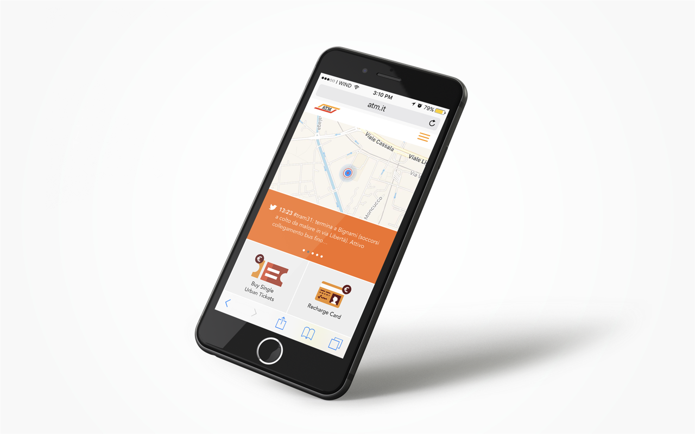
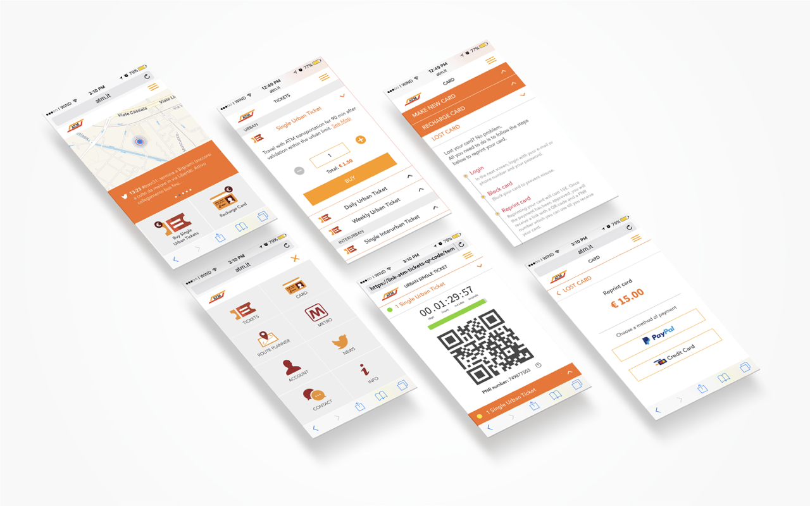
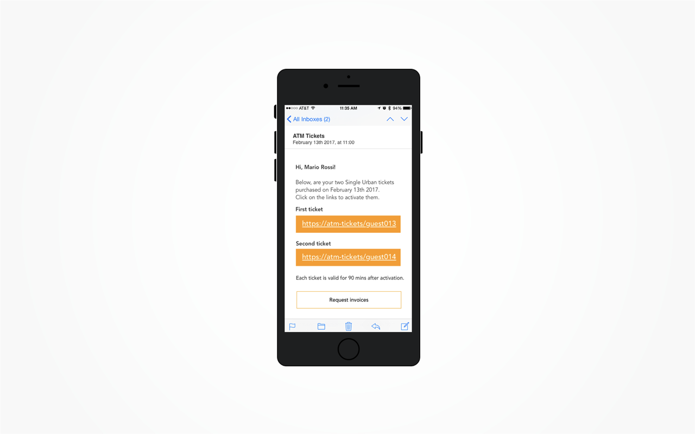

ATM Web Application
UI and UX Design
Web Application designed at “Scuola Politecnica di Design” during the UX Design classes to purchase ATM - public transport company in Milan - tickets online in an easier way.
To create the project we used Balsamiq first, SketchApp and Invision then. Here the Invision prototype available.

The starting point was a research about ATM transportation in Milan and how people uses the application and the kiosks. That way we defined user needs and problems that helped us to make the web application more usable.
When we came up with a good solution we did some user testing to improve our work and finalize the project.

